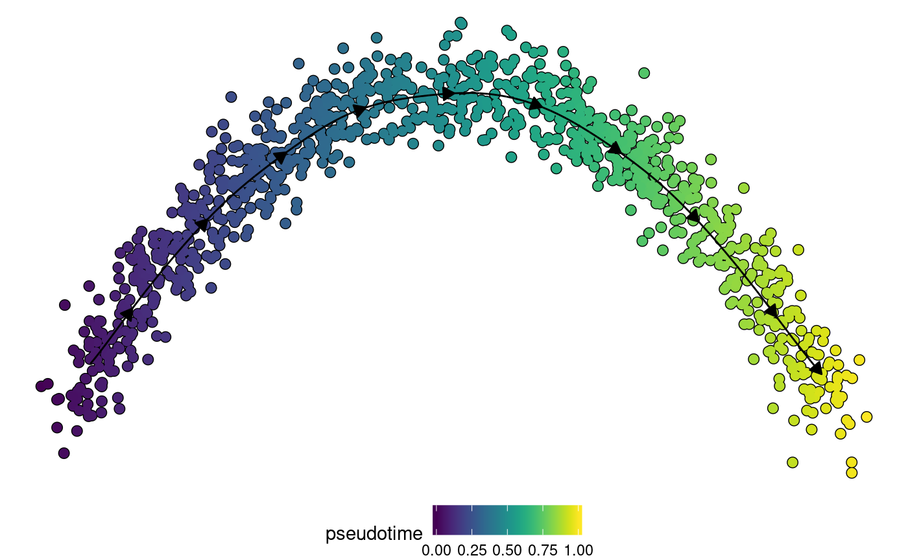
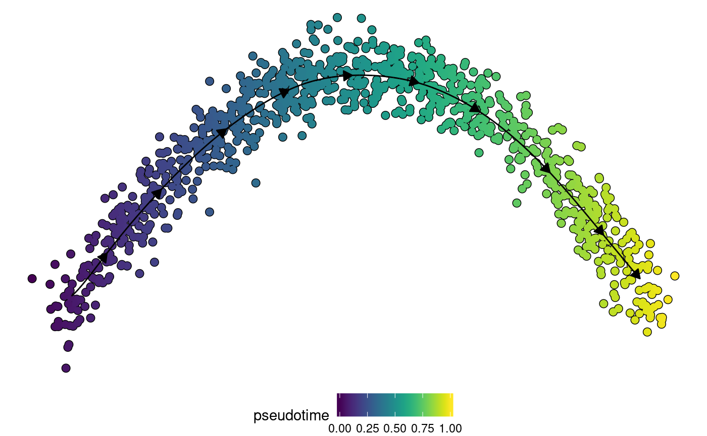
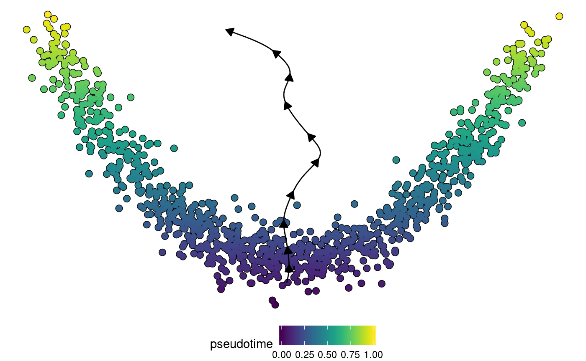

vignettes/create_ti_method_docker.Rmd
create_ti_method_docker.RmdThis vignette describes how to include your own method into the dynverse workflow. We’ll illustrate this with a very basic method: using one of the components of a PCA as the pseudotime.
There are two main ways to add a new method:
A TI docker requires at least three files. The files for this example are also available at https://github.com/dynverse/comp1.
definition.yml)An example of a definition.yml file (as can be found on the github):
name: component_one
parameters:
component:
type: integer
lower: 1
upper: 10
default: 1
input:
format: feather
required:
- expression
optional:
- start_id
output:
format: feather
outputs:
- linear_trajectoryThis yaml file contains:
A named list of parameters for the method. A parameter always has a type and a default value. Optionally, parameters can also have other properties which define the parameter space. These are used for parameter tuning:
| type | properties | example |
|---|---|---|
| numeric | lower, upper, distribution, mean, sd, rate | 3.5 |
| numeric_vector | lower, upper, distribution, mean, sd, rate, length | [3.5, 4.5] |
| integer | lower, upper, distribution, mean, sd, rate | 3 |
| integer_vector | lower, upper, distribution, mean, sd, rate, length | [3, 10] |
| logical | true | |
| logical_vector | length | [true, false, true] |
| discrete | values | mds |
| discrete_vector | length, values | [mds, pca, tsne] |
uniform (default)normal (also specify mean and sd)exponential (also specify rate).The input determines which kind of expression and prior information is given to the method. It contains the following properties:
| output_format | description | example_script |
|---|---|---|
| hdf5 | HDF5 format | python, R |
| text | csv and json files | python, R |
| feather | Feather dataframe files | python, R |
| rds | R binary files | R |
| input_id | description |
|---|---|
| expression | Expression matrix |
| counts | Raw counts matrix |
| start_id | One or more start cell identifiers |
| end_id | One or more end cell identifiers |
| end_n | The number of end states |
| start_n | The number of start states |
| groups_id | Named character vector linking the cell identifiers to different states/branches |
| groups_n | Number of states/branches, including start, end and intermediary states |
| groups_network | Dataframe containing the known network between states/branches. Contains a from and to column |
| time | Named numeric vector linking the cell ids to time points |
| features_id | Genes/features known to be important in the dynamic process |
The output determines how the output of a method can be transformed into a common trajectory model.
| output_format | description | example_script |
|---|---|---|
| text | csv and json files | python, R |
| feather | Feather dataframe files | python, R |
| rds | R binary files | R |
| dynwrap | directly wrapped using dynwrap functions | R |
| output_id | description | required | optional |
|---|---|---|---|
| branch_trajectory | Define a trajectory model given its branch network and the pseudotime of the cells on one of the branches |
branch_network branches branch_progressions |
|
| cell_graph | Constructs a trajectory using a graph between cells, by mapping cells onto a set of backbone cells. |
cell_graph to_keep |
milestone_prefix |
| cluster_graph | Constructs a trajectory using a cell grouping and a network between groups. Will use an existing grouping if it is present in the model. | milestone_network | grouping |
| cyclic_trajectory | Constructs a circular trajectory using the pseudotime values of each cell. | pseudotime | directed do_scale_minmax |
| dimred_projection | Constructs a trajectory by projecting cells within a dimensionality reduction onto a backbone formed by a milestone network. Optionally, a cell grouping can be given which will restrict the edges on which a cell can be projected. |
milestone_network dimred dimred_milestones |
milestone_ids grouping num_segments_per_edge |
| end_state_probabilities | Constructs a multifurcating trajectory using the pseudotime values of each cell and their end state probabilities. If pseudotime values are not given, will use pseudotime already present in the model. | end_state_probabilities |
pseudotime do_scale_minmax |
| linear_trajectory | Constructs a linear trajectory using the pseudotime values of each cell. | pseudotime | directed do_scale_minmax |
| trajectory | Define a trajectory model given its milestone network and milestone percentages or progressions |
milestone_network milestone_percentages or progressions |
milestone_ids divergence_regions |
In addition, a method can also generate other output which will be added to the model. This includes a grouping/clustering (grouping) or a dimensionality reduction (dimred).
| output_id | description | required | optional |
|---|---|---|---|
| dimred | Add or create a dimensionality reduction | dimred |
dimred_milestones dimred_trajectory_segments expression_source |
| grouping | Add a cell grouping to a data wrapper | grouping | group_ids |
| pseudotime | Add or calculate pseudotime as distance from the root | pseudotime | |
| root | Root the trajectory | root_cell_id root_milestone_id |
|
| timings | Add count and normalised expression values to a model | timings | |
| waypoints | Add or create waypoints to a trajectory | n_waypoints resolution |
The definition.yml file can also contain other information about the methods, such as the authors, the detectable trajectory_types, the url of the code, the version, … See the dynmethods containers for examples.
Dockerfile
An example of a Dockerfile (as can be found on the github):
# docker build R_feather -t dynverse/comp1:R_feather
FROM rocker/tidyverse
RUN R -e 'install.packages("feather")'
ADD . /code
ENTRYPOINT Rscript /code/run.RIn this example, we add all the files present in the current working directory (which contains the run.R file) to the /code directory.
All dependencies of the method should be installed in this Dockerfile (or from parent docker images)
This file should always contain an entrypoint, which will be called when the TI method is run.
All input files requested in the definition.yml will be mounted in the /input directory of the docker. After inferring a trajectory, the method should write output files into the /output directory. An example (as can be found on the github):
library(dplyr, warn.conflicts = FALSE)
library(tibble, warn.conflicts = FALSE)
library(readr, warn.conflicts = FALSE)
library(feather)
## Load data -----------------------------------------------
expression <- read_feather("/input/expression.feather") %>%
column_to_rownames("rownames") %>%
as.matrix()
if(file.exists("/input/start_id.feather")) {
start_id <- read_feather("/input/start_id.feather")$start_id
} else {
start_id <- NULL
}
params <- jsonlite::read_json("/input/params.json", simplifyVector = TRUE)
## Trajectory inference -----------------------------------
# do PCA
pca <- prcomp(expression)
# extract the component and use it as pseudotimes
pseudotime <- pca$x[, params$component]
# flip pseudotimes using start_id
if (!is.null(start_id)) {
if(mean(pseudotime[start_id]) > 0.5) {
pseudotime <- 1-pseudotime
}
}
## Save output ---------------------------------------------
# output pseudotimes
tibble::enframe(pseudotime, "cell_id", "pseudotime") %>%
write_feather("/output/pseudotime.feather")Now we’re all set to test the TI method on data.
We first have to build the method to an image. Make sure that docker is installed (https://docs.docker.com/install/). Next, build the container in shell
docker build -t dynverse/comp1 .or in R
system("docker build -t dynverse/comp1 .")The -t dynverse/comp1 argument gives a tag to this container, so that it can be easily run later.
Although this container can be run anywhere as long as the /input and /output folders are mounted, we’ll run it here using the dynwrap workflow. First, we have to wrap the docker into a method function.
library(dynwrap)
ti_comp1 <- create_docker_ti_method("dynverse/comp1")If the method is on the docker hub, it can also be pulled
ti_comp1 <- pull_docker_ti_method("dynverse/comp1")Then we’ll use some test data
ncells <- 1000
pseudotime <- runif(ncells)
expression <- matrix(
c(
(pseudotime - 0.5) ** 2,
sqrt(pseudotime + 20),
pseudotime
),
ncol = 3,
dimnames = list(as.character(rep(seq_len(ncells))), as.character(c("A", "B", "C")))
)
expression <- expression + rnorm(length(expression), sd = 0.02)
start_id = rownames(expression)[which.min(pseudotime)]
counts <- round(expression)
task <- wrap_expression(
expression,
counts
) %>% add_prior_information(start_id=start_id)Now infer a trajectory
model <- infer_trajectory(task, ti_comp1())## NULLdynplot can be used to easily visualise the trajectory model:
# devtools::install_github("dynverse/dynplot")
dynplot::plot_dimred(model, color_cells = "pseudotime" , expression_source = task$expression)
We can also provide some optional prior information to the method:
model <- infer_trajectory(task, ti_comp1(), give_priors = "start_id")## NULLdynplot::plot_dimred(model, color_cells = "pseudotime" , expression_source = task$expression)
Or change some parameters:
model <- infer_trajectory(task, ti_comp1(component = 2))## NULLdynplot::plot_dimred(model, color_cells = "pseudotime" , expression_source = task$expression)
The container can be debugged by running the method with debug = TRUE:
infer_trajectory(task, ti_comp1, debug = TRUE)## NULL## Error: Error during trajectory inference
## Use this command for debugging:
## docker run --entrypoint 'bash' -it -v /tmp/RtmpqibM5Q/input:/input -v /tmp/RtmpqibM5Q/output:/output dynverse/comp1This will print a shell command which can be used to enter the container with the /input and /output directories mounted.
The easiest way to make your method available to other users is by pushing the docker to docker hub:
docker push dynverse/comp1Users will then be able to run the method by simply pulling the container:
method <- pull_docker_ti_method("dynverse/comp1")We also strongly encourage you to include within our collection of TI methods available in the dynmethods R package. Feel free to create an issue or send us a pull request.